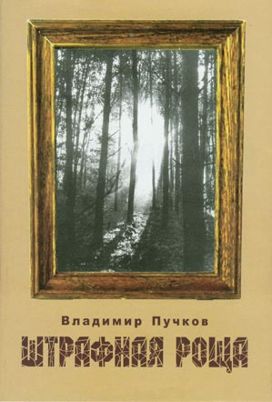

НОВОСТИ 2005 ГОДА:
Афиша
В среду, 4 января 2006 в ДК УВД, ул. Большая Морская,58, состоится "Благотворительный концерт по сбору средств на строительство в г. Николаеве Свято-Екатериненского православного храма."
Выступит Лауреат Международных конкурсов ВИКТОРИЯ ЕРМОЛЬЕВА (фортепиано)
1. 5 октября 2005 г. после продолжительной и тяжелой болезни не стало поэта Эмиля Январева. Памяти безвременно ушедшего поэта статья А. И. Золотухина "Прощание с поэтом"
2. 25 сентября 2005 г. прошло общее собрание
клуба на котором:
был заслушан отчет, утверждена программа работы клуба на 2005-2006 гг. Принято решения о ходатайстве для представления Почетного члена Пушкинского клуба В.А. Карнауха к званию Почетного гражданина города Николаева, а также о включении Почетными членами клуба Ю. Л. Булаховской и И.П. Мегелы
3. В поминальные дни безвременно ушедшей от нас талантливейшей пианистки Кати Панны (см. статью "Последнее скерцо Шопена"), наш город посетила лауреат Международных конкурсов, подруга Кати Панны, пианистка Дарья Брославская из Воронежа. (краткий фото-репортаж)
4. На третьей выставке книгоиздателей нашего города в Центральной городской библиотеке им. М.Л. Кропивницкого 20 апреля 2005 г. состоялась презентация книги Золотухина А.И. "Экзампей. Эссе, стихи и поэма".- Николаев: "Возможности Киммерии", 2004, 272 стр. Экзампей у Геродота - это горький источник и "Священные пути" cкифов. В книге приведены три эссе как опыт реконструкции Гилеи и Экзампея Геродота, находящихся в Николаевской области Украины. Кроме того, содержатся эссе, касающиеся первого художника и поэта Киевской Руси Илариона - Никона, Рафаэля, Верещагина и братьев Ге. Книга посвящена памяти николаевского художника В.И. Золотухина, чьими картинами представлено здесь его творчество. Книга имеет твердую цветную обложку, цветные форзацы и множество цветных иллюстраций на мелованной бумаге.
5. Николаевский Пушкинский клуб поздравляет Почетного члена нашего клуба, депутата Горсовета, Главного редактора газеты "Вечерний Николаев", поэта Владимира Юрьевича Пучкова с присвоением ему Всеукраинской литературной премии им. Н. Ушакова 2005 года за поэтический сборник "Штрафная роща"!
Напоминаем, что среди почетных членов нашего клуба уже есть лауреат премии им. Н. Ушакова - это николаевский поэт Эмиль Январев. Здоровья и творческих успехов Вам, дорогие лауреаты престижной премии!
Налегке, черны и тощи,
В доме чище -
Утром облачки румяны,
Лишь мобильник заколдован -
|
 |
6. Третья выставка книгоиздателей нашего города состоится в Центральной библиотеке им. М.Л. Кропивницкого с 20 по 22 апреля т.г. К участию в ней приглашаются все жители города, все книгоиздатели, в том числе и те, которые по тем или иным причинам не принимали участие в первых двух выставках. Организаторы выставки питают особые надежды на активное посещение выстав-ки студентами и преподавателями наших вузов. Открытие выставки состоится в 14 часов 20 апреля, а в 15 часов начнется презентация книг, выпущенных издательством "Возможности Киммерии". Подробности ...
7. При содействии Николаевского городского головы В.Д. Чайки, председателя правления Благотворительного фонда "Николаев - 2000" В.Ю. Пучкова и председателя Пушкинского клуба А.И. Золотухина (разработан макет книги в электронном виде) увидела свет новая книжка Николая Троянова "ЕВРОПЕЙЦЫ", Николаев, "ЧП Гудым И.А.", 2004, 136 стр. В книге помещены четыре пьесы актера, драматурга, режиссера, руководителя Николаевского народного драматического театра Н.А. Троянова: "Эразм из Роттердама", "Сковорода", "Макаров и Верещагин", а также "Триумф старого дома" (об истории создания ныне Николаевского государственного университета им. В.А. Сухомлинского). См. также вступительную статью А.И. Золотухина "Европейский театр Троянова".
8. При содействии Союза Николаевской интеллигенции (председатель проректор НУК им. Адм. С.О. Макарова Ю.Н. Харитонов) и поддержке Государственного Эрмитажа (Санкт-Петербург) в типографии НУК издана книга "BORYSTENICA-2004 - Материалы международной научной конференции к 100-летию начала исследований острова Березань Э.Р. фон Штерном". Николаев, 2004, 188 стр. Ответственный редактор - член-корреспондент НАН Украины С.Д. Крыжицкий, ответственный секретарь - В.В. Назаров. Макет книги разработан в электронном виде председателем Пушкинского клуба А.И. Золотухиным. В сборнике имеется три раздела: Творческое наследие Э.Р. фон Штерна; Археологические исследование Березани; Историко-археологические исследование Северного Причерноморья.
Николаевский Пушкинский клуб выражает соболезнование родным и близким, Институту археологии НАН Украины по случаю безвременной кончины талантливого исследователя острова Березань, археолога Владимира Владимировича Назарова. В газете "Сегодня" за 4 мая 2005 г. опубликована статья научного обозревателя Наталии Строковской "Он открыл Украине храм Афродиты", в которой указано на странные обстоятельства его гибели…
9. Председатель Пушкинского клуба А.И. Золотухин принял участие в ежегодном конкурсе поэтов, организованном Международным обществом пушкинистов (Нью-Йорк). Был представлен видеостих "БАХ. СЮИТА ДЛЯ ВИОЛОНЧЕЛИ СОЛО №2 РЕ МИНОР". Результаты конкурса опубликованы в русскоязычных газетах США и в журнале "Панорама" (Нью-Йорк). См. сертификат МОП о присвоении звание "Лауреата 14 Международного поэтического конкурса 2004 года "Пушкинская лира" А. Золотухину - за лучшее стихотворение":
10. МЕЖДУНАРОДНЫЙ ДЕНЬ ПОЭЗИИ 2005 ГОДА В НИКОЛАЕВЕ! Третий год Николаевский Пушкинский клуб совместно с Николаевской областной организацией Национального союза писателей Украины отмечает Всемирный день поэзии. На этот раз встреча с профессионально пишущими поэтами произойдет в воскресенье 27 марта 2005 г., в 14 часов, в музыкальной гостиной художественного музея им. В.В. Верещагина. На встрече состоится презентация "Антологии" николаевских поэтов, которую представит председатель союза писателей Николаевского края Вячеслав Качурин. Кроме того, в авторском исполнении прозвучат стихи николаевских поэтов: Альбины Бижан, Натальи Билецкой, Валерия Бойченко, Екатерины Голубковой, Майи Жерихиной, Вячеслава Качурина, Михаила Ковалевского, Дмитра Креминя, Тараса Креминя, Игоря Мальцева, Ларисы Матвеевой, Сергея Пискурева, Владимира Пучкова, Аркадия Сурова, Татьяны Фурсовой, Вячеслава Шарапы и Эмиля Январева. Пушкинский клуб ознакомит участников встречи с книгой безвременно ушедшего николаевского поэта Сергея Павлова "Пир истории", как эпической фантасмагорией мировой истории. Музыкальное сопровождение вечера доцента НГУ им. В.А. Сухомлинского Ольги Петренко. (Опубликовано в газете "Вечерний Николаев" 22 марта 2005 г.)
фоторепортаж с Международного дня поэзии
11. В газете "Вечерний Николаев" 24 марта 2005 г. опубликована статья О.М. Данильчук "Возвышенная душа как точка опоры" о почетном члене Пушкинского клуба профессоре НГУ им. В.А. Сухомлинского Т.К. Пересунько.